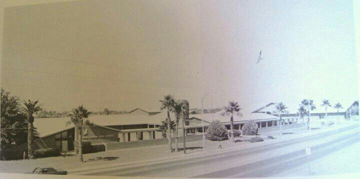

Mesa Junior High School was opened in 1953 as East Mesa Junior High School. It was the first junior high school in Mesa and Mesa Public School system. The school got renamed in the early 1960s because the school campus located in 828 E. Broadway Rd
Mesa, AZ 85204, and is the part of Mesa Public Schools for the community. As the school serves over the years, it continues to serve students and teachers in learning experience and activities. When Mesa Public Schools announces to close some junior high schools due to decline enrollment. Mesa Junior High School was closed in 2012. Communities plan to establish the park, called Eagle Park. Once it got started, Mesa Junior High School campus was demolished on January 2014. It will take 5 years to construct. In 2019, Eagle Park are welcome everyone to join the community and space.